Chapter 6 Differential expression analysis
Learning Objectives
The goal of this chapter is
- to understand the different theorical concepts behind a differential expression analysis;
- to provide a real-life example of differential expression (DE) analysis analysis running DESeq2 step-by-step.
6.1 Theory behind DESeq2
A large number of computational methods have been developed for differential expression analysis (Seyednasrollah, Laiho, and Elo 2015), differing slightly in their methodology. Here we will present DESeq2, a widely used bioconductor package dedicated to this type of analysis. For more information read the original paper (Love, Huber, and Anders 2014) and the DESeq2 package vignette.
The starting point of the analysis is a count matrix, and the goal is to identify genes that are differentially expressed between samples.
The different steps of the analysis are illustrated in the figure below. Briefly, DESeq2 starts by estimating scaling factors. Then, it estimates the gene-wise dispersions and shrinks these estimates to generate more accurate estimates of dispersion to model the counts. Finally, DESeq2 fits a generalized linear model, performs hypothesis testing and generates a list of differentially expressed genes.
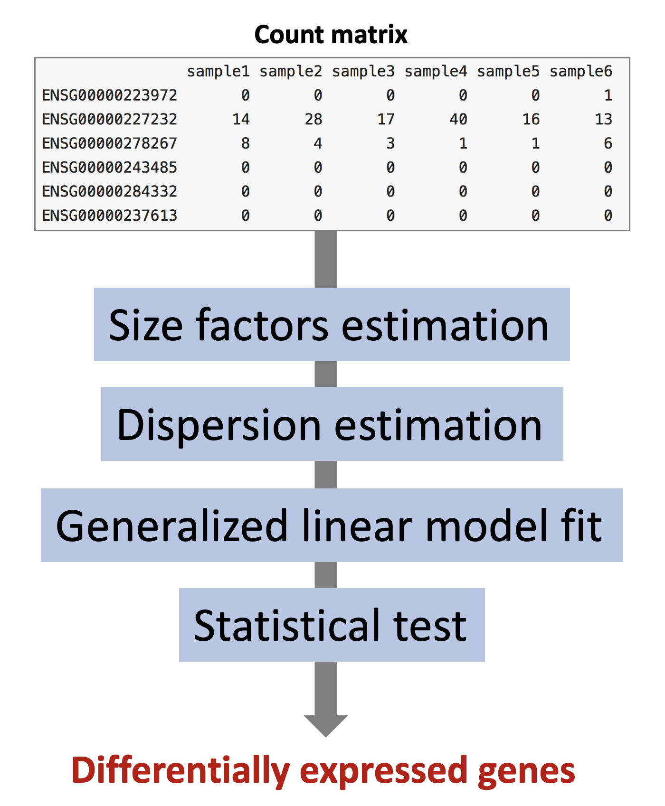
6.1.1 Size factor estimation
DESeq2 expects as an input a matrix of raw counts (un-normalised counts). These counts are supposed to reflect gene abundance (what we are interested in), but they are also dependent on other less interesting factors such as gene length, sequencing biases, sequencing depth or library composition. DESeq2 will estimate scaling factors that will be used internally to account for the “uninteresting” factors rendering the expression levels more comparable between samples.
- Gene length
As illustrated in the example below, gene 1 and gene 2 have similar levels of expression, but many more reads map to gene 2 than to gene 1. This might not be related to biology but it could just reflect the fact that gene 2 is longer. Taking into account gene lengths in the normalisation procedure is important when the purpose is to compare gene expression levels within the same sample. However, for differential expression analysis, as gene expression levels are compared between samples, it is not necessary to use gene lengths to estimate the scaling factors (it is even not recommended). It was just mentioned here for information because many RNA-seq common normalisation methods such as TPM (transcripts per million), FPKM (fragments per million), or RPKM (reads per million) take into account gene lengths.
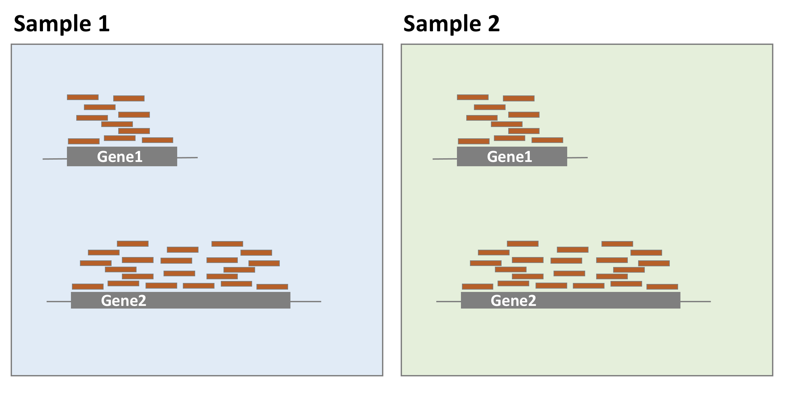
- Sequencing depth
Each sequencing experiment will produce a certain number of reads expected to be typically around tens of millions. A fraction of the raw sequencing reads will be discarded during the quality control, the alignment and the counting processes, which implies that the total number of reads for each sample will be different.
As shown in the following example, all genes seem to be expressed at higher levels in sample 1 than in sample 2, but this is likely because sample 1 has twice more reads than sample 2. Accounting for sequencing depth is necessary for differential expression analysis as samples are compared with each other.
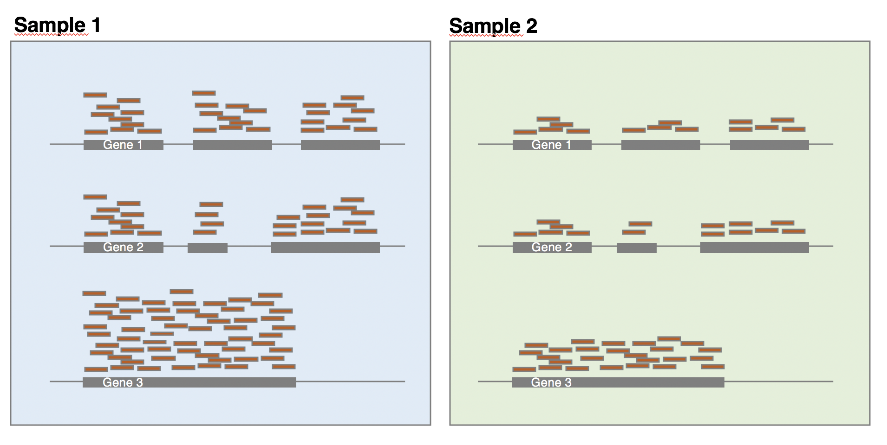
- Library composition
The library composition might also be different across samples. To illustrate this, let’s imagine a basic cell expressing only 2 genes (genes 1 and 2) and assume that a drug treatment induces a strong expression of gene 3. If the normalisation was done using total number of reads only, then the counts of gene 1 would be divided by 15 in control cells, while it would be divided by 165 in treated cells. This would lead to the misleading conclusion that the treatment has reduced 11 times the expression of gene 1. In this case, the library composition has changed but not the expression level of gene 1.
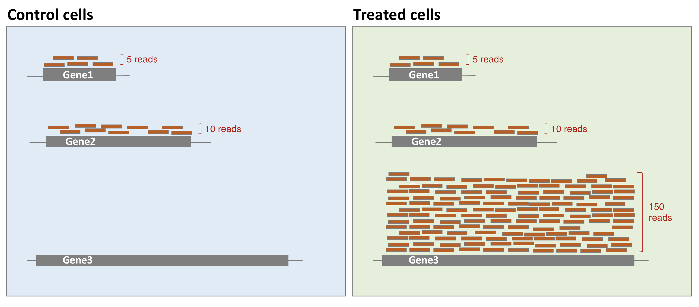
In a real dataset, a few highly differentially expressed genes, differences in the number of genes expressed between samples, or presence of contaminations can skew library composition. Accounting for it is highly recommended for accurate comparison of expression between samples (Anders and Huber 2010).
- DESeq2 normalisation method
DESeq2 will estimate size factors in a way that takes into account both library size and library composition, using the median of ratios method:
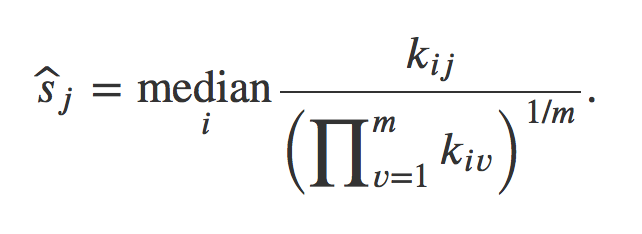
Let’s try to understand what is behind this formula.
Step 1: DESeq2 creates a pseudo-reference sample by calculating a row-wise geometric mean (for each gene). Geometric mean is used instead of classical mean because it uses log values. It is hence more robust as it is less influenced by extreme values.
Step 2: For every gene in every sample, ratios of counts/pseudo-reference sample are calculated.
Step 3: The median value of all ratios for a given sample is taken as the scale factor for that sample. Importantly, the method is based on the assumption that the majority of genes are not differentially expressed, which implies that rare genes that are really up-regulated or down-regulated should not influence the median. Furthermore, the median is calculated skipping genes with a geometric mean of zero. This will hence automatically eliminate genes expressed in some samples but not in others and will help to focus the scaling factor on housekeeping genes.
Step 4: Normalised counts can be obtained by dividing each raw count values in a given sample by that sample’s scaling factor.
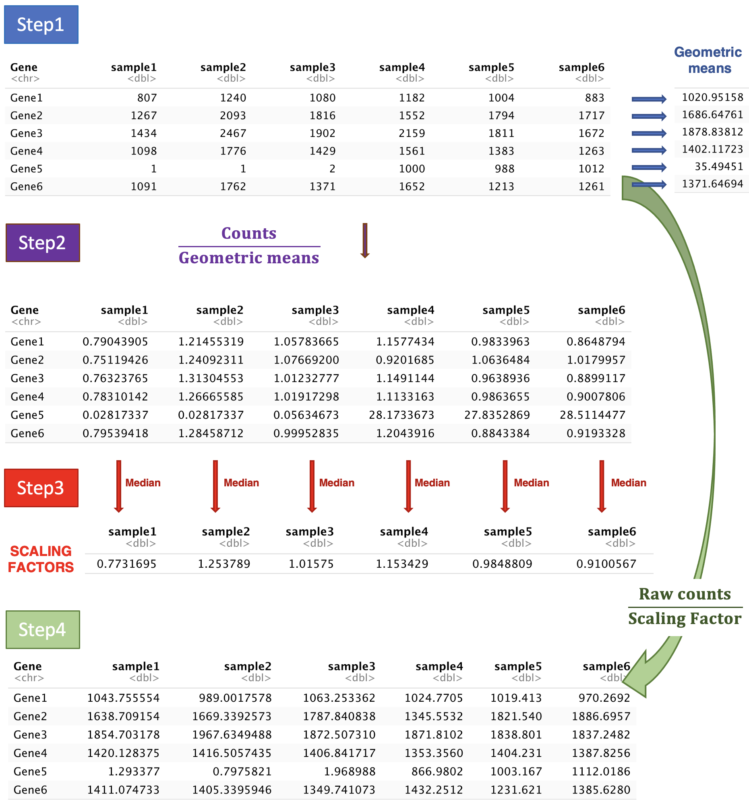
6.1.2 Count modeling
Let’s first have a look at the counts distribution for a typical RNA-seq sample:
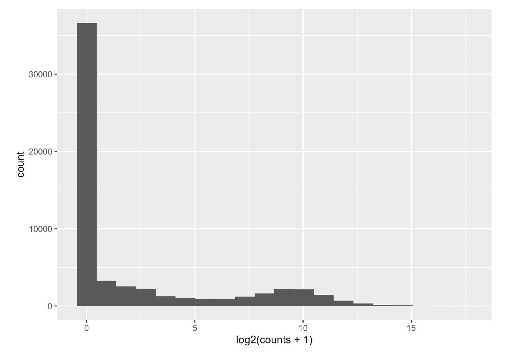
It is obvious that the count data is not normally distributed. Counts are integer values, always positive, and we observe a large number of genes with low counts (or counts about zero), and a few number of genes with a very high count level.
As seen in the WSBIM1322 course with the example of the coin toss, count data are often modelised by a binomial distribution with parameters \(n\) and \(p\) where \(p\) is the discrete probability distribution of the number of successes in a sequence of \(n\) independent experiments. In an RNA-seq experiment, \(p\) would be the probability of getting a read associated to a particular gene given that \(n\) total number of reads were sequenced in the experiment. However, when \(n\) is large and \(p\) is low, Poisson distribution is used instead of binomial. It describes typically the distribution of a rare event in a large population, which fits better to RNA-seq. Indeed, for each sample, the total number of reads tends to be in millions, while the counts per gene can vary considerably but tend to be in tens, hundreds or thousands. Therefore, the chance of a given read to be mapped to any specific gene is extremely small.
The Poisson distribution has only one parameter indicating its expected mean. Its variance and all other properties follow from it. In particular, one key assumption of the Poisson distribution is that the variance equals the mean.
\[K_{ij} \sim P(\mu_{ij} = \sigma^2_{ij})\]
This assumption is, however, not valid for RNA-seq data, because the observed variances tend to be higher than the means. RNA-seq data are said to be overdispersed because counting noise is not the only source of variability. Observed counts for each gene across biological replicates tend to fluctuate more than expected due to the combination of biological and technical factors. Applying a Poisson distribution to RNA-seq counts would underestimate the variance, resulting in a high number of false positives.
Actually, RNA-seq counts are better modelised by an alternative distribution, the negative-binomial. It is derived from the Poisson distribution but the negative-binomial distribution has, in addition to the \(\mu\) parameter, an extra parameter \(\alpha\) called the dispersion parameter to model this /extra/ variance that is empirically observed in RNA-Seq experiments.
\[K_{ij} \sim NB(mean = \mu_{ij}, dispersion = \alpha_i)\]
The dispersion parameter \(\alpha_i\) defines the relationship between the variance of the observed count and its mean value5.
\[VAR(K_{ij}) = \mu_{ij} + \alpha_i.\mu_{ij}^2\]
Having modelised counts by a negative-binomial distribution, next step is to estimate, for each gene, the two parameters of the distribution (mean and dispersion). The mean will be estimated easily from the observed normalised counts in both conditions, but the dispersion is not that trivial to estimate accurately.
6.1.3 Dispersion estimation
Dispersion is a measure of variability in the data (\(\alpha = CV^2\)). A gene with a dispersion value of 0.04 means 20% variation around the expected mean. Estimate the dispersion for each gene would be quite straightforward if we had for each condition, hundreds of replicates. Of course, this is not feasible for economic reasons, and experiments are often done on only 3 replicates. But how to estimate dispersion reliably based on such a little number of samples? To overcome this problem, DESeq2 makes the assumption that genes of similar expression levels have similar dispersions and it will use information coming from other genes expressed at similar level.
Step1: Dispersion for each gene is estimated separately. An initial estimation of dispersion for each gene is first estimated using maximum likelihood estimation. In other words, given the count values of the replicates, the most likely estimate of dispersion is calculated. For each gene, the dispersion estimate is plotted in function of the mean expression level (mean counts of replicates). This produce the so-called “dispersion plot” where each gene is represented by a black dot.
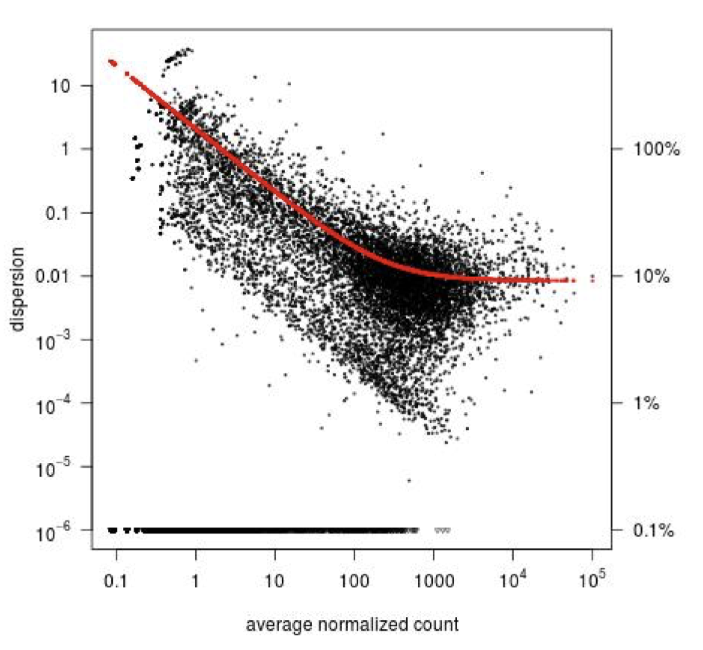
Note that the dispersion plot highlights an intrinsic feature of RNA-seq data: genes with low read counts show substantially higher dispersion than highly expressed genes.
Step 2: A curve is fitted to gene-wise dispersion estimates. A curve is fitted (displayed as a red line in the dispersion plot), which represents the estimate for the expected dispersion value for genes of a given expression strength. The idea behind fitting a curve to the data is that different genes will have different scales of biological variability, but, over all genes, there will be a distribution of reasonable estimates of dispersion.
Step 3: Shrinkage of gene-wise dispersion estimates toward the values predicted by the curve. Initial gene-wise dispersion estimates will be shrinked (by an empirical Bayes approach) towards this fitted curve to obtain the final dispersion estimates. The strength of the shrinkage for each gene will depend on how close the dispersion values are from the curve, and on the number of samples available (the more sample (as the sample size increases, the shrinkage decreases in strength, and eventually becomes negligible). adjusted dispersion values are represented by the blue dots in the dispersion plot. For a certain number of genes, the adjusted dispersion will be significantly increased and this will limit the number of false-positive that could arise from an underestimated dispersion. Dispersion estimates that are slightly above the curve are also shrunk toward the curve. However, genes with extremely high dispersion6 values are not. In fact DESeq2 assumes that these genes might not follow the modeling assumptions and could have higher variability than others for biological or technical reasons. For these genes, shrinking the values toward the curve could result in false positives. These genes are shown surrounded by blue circles in the dispersion plot.
Dispersion shrinkage is particularly important to reduce false positives in the differential expression analysis.
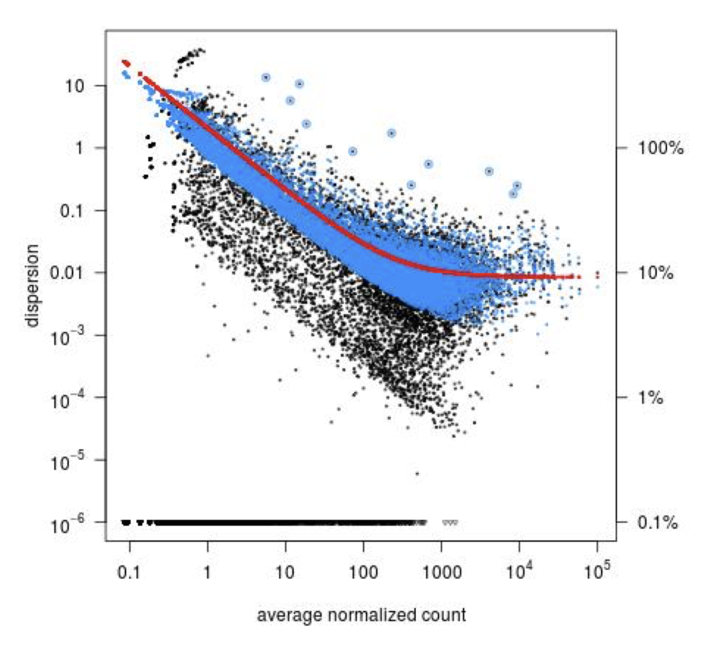
6.1.4 Generalized linear model
DESeq2 fits a generalized linear model of the form: \[log2(q_{ij}) = \Sigma x_j.\beta_i\]
where the parameter \(q_{ij}\) is proportional to the expected true concentration of gene \(i\) for sample \(j\):
\[ q_{ij} = \frac{\mu_{ij}}{SizeFactor_{j}} \]
and \(\beta_i\) represents the log2FC between conditions. \(\beta_i\) coefficients are computed from the data.
In the case of a simple design with one condition (a treatment effect for example), the model can be written
\[log2(q_{ij}) = \beta_0 + \beta_1.x_j + \epsilon\]
\(\beta_0\) is the log2 expression level in the reference (control samples)
\(\beta_1\) is the log2FC between treated and control cells
\(x_j\) = 0 if sample j is the control sample
\(x_j\) = 1 if sample j is the treated sample
6.1.5 Hypothesis testing
The logFC are computed from the data using the GLM, and these are associated to standard errors that depend on the variance of the counts.
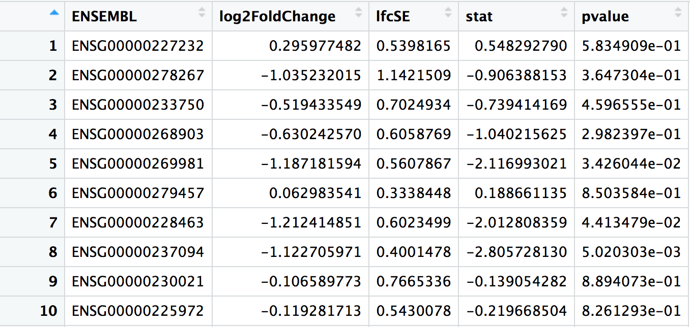
The ultimate goal of a test for differential expression is to decide whether, for a given gene, an observed difference in read counts is significant, that is, whether it is greater than what would be expected just due to natural random variation.
The null hypothesis \(H_0\) is that there is no differential expression across the sample groups, which is the same as saying that the log2FC = 0. A statistical test, the Wald test, will determine whether the data provides sufficient evidence to conclude that this value is really different from zero.
For the Wald test, the log2 fold-change is divided by its standard error, resulting in a z-statistic. The z-statistic is compared to a standard normal distribution, and a p-value is computed reporting the probability that a z-statistic at least as extreme as the observed value would be selected at random. In principle, if this p-value is small (below a certain cutoff) the null hypothesis is rejected.
6.1.6 Multiple testing correction
Recall that a pvalue of 0.05 means that there is only 5% chance of getting this data if no real difference existed (if \(H_0\) was really true). In other words, choosing a cut off of 0.05 means there is 5% chance that the wrong decision is made (resulting in a false positive). But remember the problematic of multiple testing seen in chapter 7 from WSBIM1322 course.
In a typical RNA-seq differential expression analysis, we might have about 20,000 genes to test and usually only a fraction of genes is really differentially expressed. Imagine a drug treatment that modifies the expression of about 1000 genes, but that has no impact on the other ones. The first histogram shows how the distribution of pvalues for truly modified genes (\(H_0\) is false) would look like: most of the pvalues would be very small. Using a pvalue cutoff of 0.05 should permit to identify most of these differentially expressed genes. The second histogram shows the distribution of pvalues for unmodified genes (\(H_0\) is true). Here the p-values are uniformly distributed between 0 and 1, and we can see that 5% of these genes appear to be significant even though this is only by chance as the drug had no real effect on them. But 5% of 19000 genes means … 950 false positive genes! Hence, pvalues obtained from the Wald test must be corrected for multiple testing to avoid excess false positives.
By default DESeq2 uses Benjamini-Hochberg method to adjust pvalues. The third histogram bellow illustrates the principle behind this False discovery rate (FDR) adjustment. As differential expression analysis is done on the whole set of genes, the resulting pvalues will have a distribution corresponding to the combination of both histograms. Most of the p-values are uniformly distributed between 0 and 1 but there is a spike to the left close to zero, due to those p-values for which \(H_0\) is false. The correction approach helps to estimate how many of the significant values are actually false positives. It tries to find the height where the p-value distribution flattens out (corresponding to the red line) and incorporates this height value into the calculation of FDR adjusted p-values.
Choosing a cut off of 0.05 for padjusted values now implies that 5% of significant tests (but not 5% of all tests as before) will result in false positives.
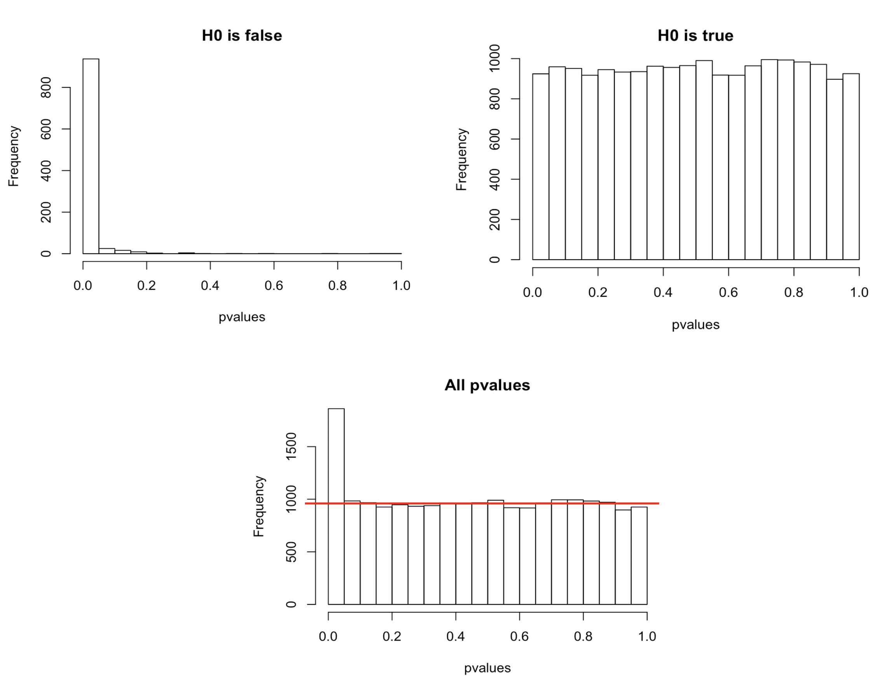
6.1.7 Independent filtering
Multiple testing adjustment tends to be associated with a loss of power. To counteract this effect, one possibility is to filter out those tests from the procedure that have no, or little chance of showing significant evidence, without even looking at their test statistic. Genes with very low counts are typically not likely to be significant due to high dispersion. However, these genes have an influence on the multiple testing adjustment, whose performance improves if such genes are removed. By removing the weakly-expressed genes from the input to the FDR procedure, more significant genes can be found among those that are kept, and this improves the power of the test. This approach is known as independent filtering.
DESeq2 uses as filtering criterion the mean of normalised counts. Genes with a mean expression value under a certain threshold are removed. Such filtering is permissible only if the filter criterion is independent of the actual test statistic, otherwise, the filtering would invalidate the test and consequently the assumptions of the FDR procedure. This is why filtering is done on the average expression over all samples, irrespective of biological condition: this filter is blind to the assignment of samples to the treatment and control group and hence independent.
The mean expression threshold used by DESeq2 for independentfiltering is defined automatically by the software. It is chosen in a way that maximizes the number of genes which will have a significant p-adjusted value. The threshold chosen (the vertical line) is the lowest quantile for which the number of rejections is within 1 residual standard deviation to the peak of the curve.
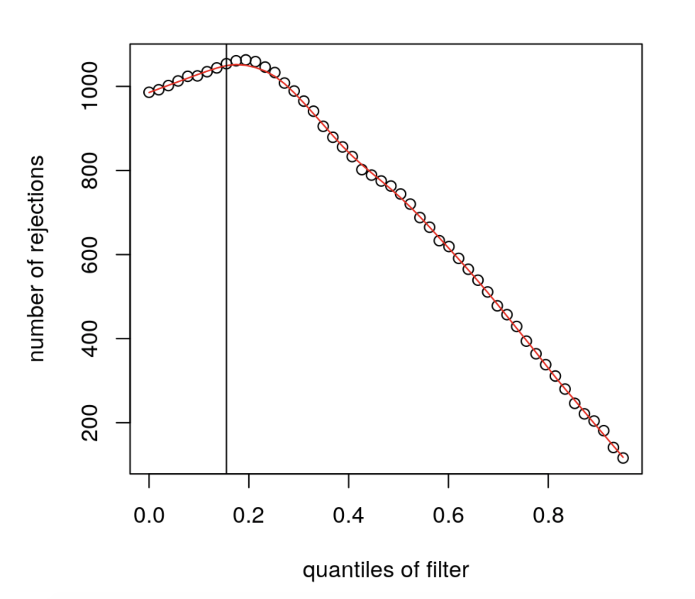
6.2 Running DESeq2
Let’s start by installing the DESeq2 package.
6.2.1 DESeqDataSet object
We will run a DESeq2 analysis using the real dataset that we stored
previously as a SummarizedExperiment in our se object. Remember
this dataset corresponds to RNA-seq data from two different cell types
treated or not by a siRNA.
## [1] 36223 12## DataFrame with 12 rows and 5 columns
## sample Type Condition university group
## <character> <character> <character> <character> <character>
## Epi_ctl1 Epi_ctl1 Epithelial ctl UCLouvain Epithelial_ctl
## Epi_ctl2 Epi_ctl2 Epithelial ctl UCLouvain Epithelial_ctl
## Epi_ctl3 Epi_ctl3 Epithelial ctl UCLouvain Epithelial_ctl
## Epi_KD1 Epi_KD1 Epithelial KD UCLouvain Epithelial_KD
## Epi_KD2 Epi_KD2 Epithelial KD UCLouvain Epithelial_KD
## ... ... ... ... ... ...
## Fib_ctl2 Fib_ctl2 Fibroblast ctl UCLouvain Fibroblast_ctl
## Fib_ctl3 Fib_ctl3 Fibroblast ctl UCLouvain Fibroblast_ctl
## Fib_KD1 Fib_KD1 Fibroblast KD UCLouvain Fibroblast_KD
## Fib_KD2 Fib_KD2 Fibroblast KD UCLouvain Fibroblast_KD
## Fib_KD3 Fib_KD3 Fibroblast KD UCLouvain Fibroblast_KDWe now switch our previous SummarizedExperiment object over to a
DESeqDataSet which is a subclass of RangedSummarizedExperiment
used by the DESeq2 package to store the read counts and the
intermediate estimated quantities during statistical analysis.
The DESeqDataSet class enforces non-negative integer values in the
count matrix. In addition, a formula which specifies the design of the
experiment (the variables that will be used in modeling) must be
provided.
## Warning in DESeqDataSet(se = se, design = ~group): some variables in design
## formula are characters, converting to factors## class: DESeqDataSet
## dim: 36223 12
## metadata(1): version
## assays(1): counts
## rownames(36223): MIR6859-1 MIR1302-2 ... LOC124905564 LOC124903857
## rowData names(4): gene ENSEMBL chr gene_biotype
## colnames(12): Epi_ctl1 Epi_ctl2 ... Fib_KD2 Fib_KD3
## colData names(5): sample Type Condition university groupAs for SummarizedExperiments:
- The Quantitative data can be accessed with
assay(). - The sample (columns) metadata can be access with the
colData()function. - The features (rows) metadata can be access with the
rowData()column. - Additional metadata describing the overall experiment can be
accessed with
metadata().
Question
How many genes are not expressed in the dataset (zero counts in all samples)?
The count matrix contains many rows with only zeros. We can start by removing these rows of the dds object as anyway no statistical test can be done on these genes that have no variation in their counts (equal to 0 in all samples).
It is not necessary to pre-filter low count genes before running the
DESeq() function, but by removing rows containing only zeros, we
reduce the memory size of the dds object and increase the speed of
the analysis. Additional filtering to improve power will be applied
later.
## [1] 24837 126.2.2 Run DESeq2
The standard differential expression analysis steps are wrapped into a
single function DESeq(). This function will automatically run the
following other functions:
estimateSizeFactors(): estimation of size factors.estimateDispersions(): estimation of dispersion.nbinomWaldTest(): Negative Binomial GLM fitting and Wald statistics.
## estimating size factors## estimating dispersions## gene-wise dispersion estimates## mean-dispersion relationship## final dispersion estimates## fitting model and testing6.2.3 Exploring data
Before anything else, a good practice is to explore the data and perform quality controls checks.
6.2.3.1 PCA
It is highly recommended to starts by a PCA to have a global view on the data. It will allow us to assess:
- Which samples are similar to or different from each other
- Whether the PCA fits the expectations from the experimental design
- Whether there are any sample outliers that may need further investigation
- The best design we should use to model the data
To perform PCA, we first need to transform the data.
This is important because RNA-seq data are intrinsically heteroscedastic. In other words, the variance is not constant across the range of expression values. Genes with higher expression levels generally exhibit greater variance (left panel in the figure below). Therefore, if raw counts are used as input for PCA, the result will be dominated by highly expressed genes, as these genes contribute most to the overall variance.
A simple strategy to address this issue would be to take the logarithm of the normalised counts. However, log-transformed counts still exhibit heteroscedasticity (middle panel).
As a solution, DESeq2 offers the varianceStabilizingTransformation ,
vst(), which stabilizes the variance across the range of mean
expression values (right panel). For genes with high counts, the
transformation does not differ much from an ordinary log2
transformation. For genes with low expression, it applies stronger
variance stabilization, which reduces the high variability associated
with small counts and Poisson noise. See ?vst for more details
about the function.
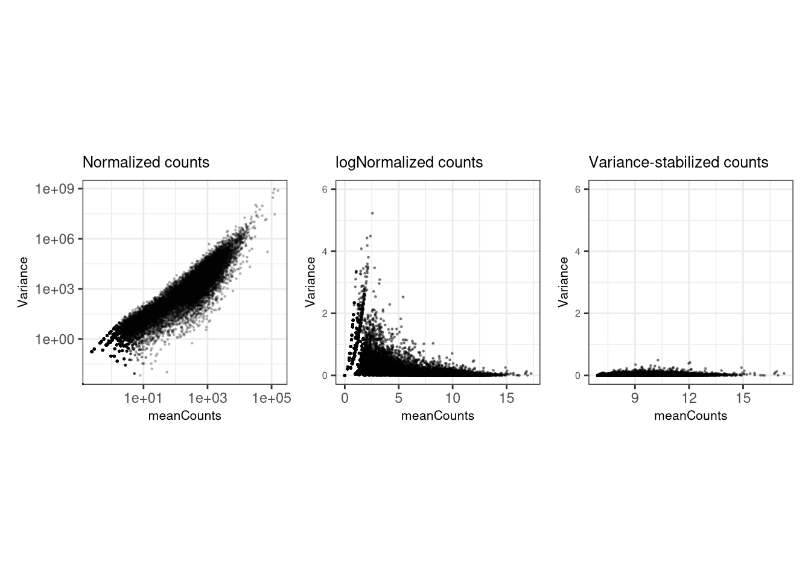
Let’s apply the vst transformation on our dds object
The plotPCA() function can then be used on the transformed counts to
generate a PCA.
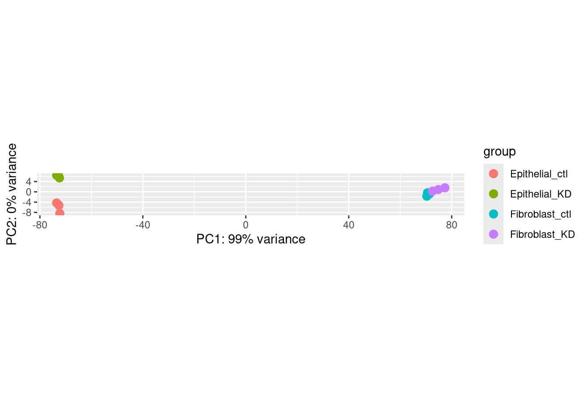
Note that the argument returnData = TRUE can be used to obtain a
dataframe of PC1 and PC2 for custom plotting.
## using ntop=500 top features by varianceggplot(pca_data, aes(x = PC1, y = PC2, color = Condition, shape = Type)) +
geom_point(size = 3) +
ggrepel::geom_text_repel(aes(label = sample), color = "black", size = 2) +
theme_bw() +
theme(aspect.ratio = .5)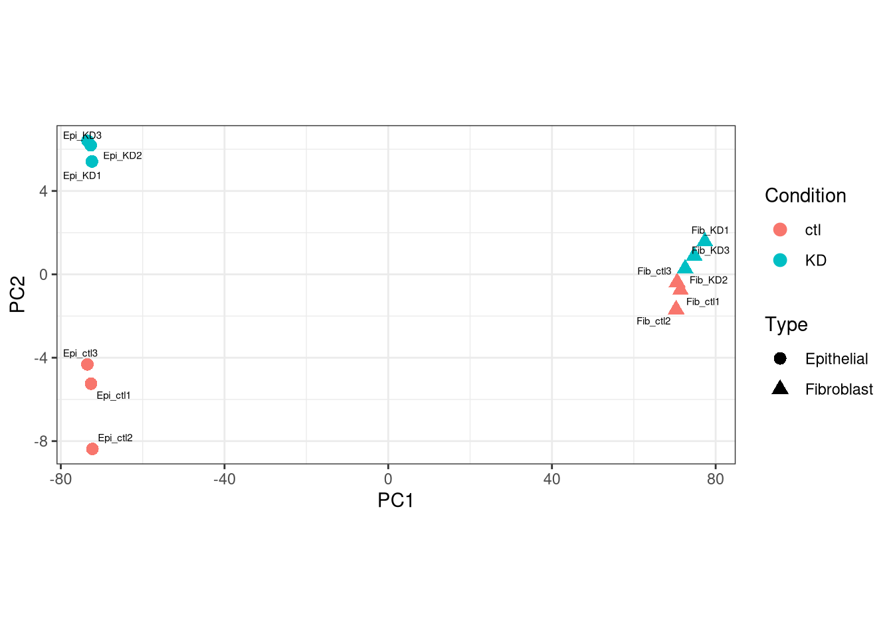
6.2.3.2 Inspecting size factors
It is also advisable to investigate any systematic bias in the
sequencing data, such as whether one sample has been sequenced more
deeply than others. One can extract size factors using the
sizeFactors() function. Usually these size factors should vary
around 1, indicating comparable sequencing depth.
## Epi_ctl1 Epi_ctl2 Epi_ctl3 Epi_KD1 Epi_KD2 Epi_KD3 Fib_ctl1 Fib_ctl2
## 0.7581502 1.3728020 1.1463593 1.0071440 1.0942223 1.0701759 0.9981153 0.8387947
## Fib_ctl3 Fib_KD1 Fib_KD2 Fib_KD3
## 0.9992936 0.9282871 1.0014724 0.98632666.2.3.3 Dispersion plot
Plotting the dispersion estimates is a useful diagnostic. This dispersion plot is typical, with the final dispersion, estimates shrunk from the gene-wise estimates towards the fitted estimates.
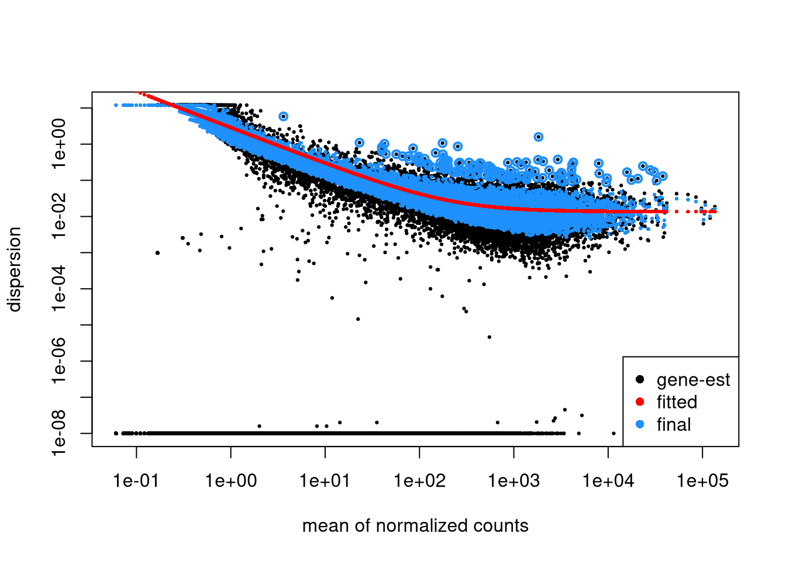
Question
Try to reproduce the previous dispersion plot using values from the
rowData of the dds object.
Hints:
- The means of normalized counts are stored in the
baseMeancolumn. - Gene initial dispersion values are stored in the
dispGeneEstcolumn. - Gene final dispersion values are stored in the
dispersioncolumn. - the dispersion-mean dependence are stored in the
dispFitcolumn.
Solution
x <- as_tibble(rowData(dds)[, c("baseMean", "dispGeneEst", "dispFit", "dispersion",
"dispOutlier", "dispMAP")], rownames = "gene")
x |>
ggplot(aes(x = baseMean, y = (dispGeneEst))) +
geom_point(size = .5) +
geom_point(data = x, aes(x = (baseMean), y = (dispMAP)),
size = .5, color = "dodgerblue")+
geom_point(data = x, aes(x = (baseMean), y = (dispFit)),
size = .5, color = "red") +
scale_x_log10() +
scale_y_log10()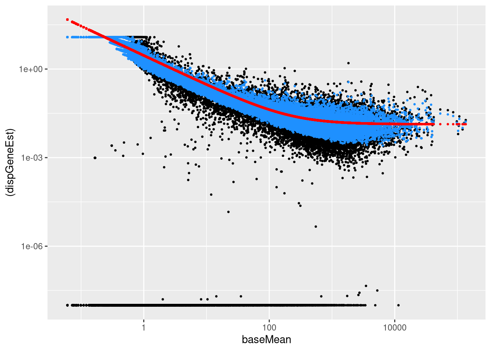
6.2.4 DESeq2 results
6.2.4.1 Extracting results
The resultsNames() function gives the names of results that can be
extracted.
## [1] "Intercept"
## [2] "group_Epithelial_KD_vs_Epithelial_ctl"
## [3] "group_Fibroblast_ctl_vs_Epithelial_ctl"
## [4] "group_Fibroblast_KD_vs_Epithelial_ctl"Note that by default, R will choose a reference level for factors
based on alphabetical order. Here Epithelial_ctl was hence set
arbitrarily as the reference level of the group factor.
## [1] Epithelial_ctl Epithelial_ctl Epithelial_ctl Epithelial_KD Epithelial_KD
## [6] Epithelial_KD Fibroblast_ctl Fibroblast_ctl Fibroblast_ctl Fibroblast_KD
## [11] Fibroblast_KD Fibroblast_KD
## Levels: Epithelial_ctl Epithelial_KD Fibroblast_ctl Fibroblast_KDResults can then be extracted using the results() function. The
name parameter must be an element of resultsNames(object) specifying
the samples to compare.
Let’s say we want to test the KD effect in epithelial cells.
Note that the contrast argument of results() can also be used to
extract results of interest. In this case, the two following commands
will give the same results7.
Question
How would you use the results() function to test the KD effect in
fibroblast cells? Try to do it in two different ways: one using the
contrast argument and one using the name argument.
Solution
- With the
contrastargument:
## log2 fold change (MLE): group Fibroblast_KD vs Fibroblast_ctl
## Wald test p-value: group Fibroblast_KD vs Fibroblast_ctl
## DataFrame with 24837 rows and 6 columns
## baseMean log2FoldChange lfcSE stat pvalue padj
## <numeric> <numeric> <numeric> <numeric> <numeric> <numeric>
## MIR6859-1 4.6306781 -0.894095 0.961546 -0.929851 0.352448 NA
## OR4G4P 0.0993489 -1.005872 4.407463 -0.228220 0.819475 NA
## CICP27 4.9534398 0.917710 1.827673 0.502119 0.615583 NA
## RPL23AP21 9.8596578 0.328020 0.631641 0.519314 0.603542 NA
## RPL23AP24 0.8612621 -0.887554 2.438205 -0.364019 0.715844 NA
## ... ... ... ... ... ... ...
## LOC102723713 0.870112 -0.5560364 2.582613 -0.2153000 0.829533 NA
## RNA5-8SN4 0.182560 -0.0440844 4.407463 -0.0100022 0.992020 NA
## LOC124907114 0.222063 -1.0058717 4.407463 -0.2282201 0.819475 NA
## RNA5-8SN5 0.109917 0.0000000 4.407463 0.0000000 1.000000 NA
## LOC124905564 96.249730 0.0689691 0.276753 0.2492084 0.803200 0.949406- With the
nameargument:
Using the resultsNames(), we can see that there is not coefficient
corresponding to group_Fibroblast_KD_vs_Fibroblast_ctl. This is not
surprising because the reference level of the group factor is
Epithelial_ctl.
## [1] "Intercept"
## [2] "group_Epithelial_KD_vs_Epithelial_ctl"
## [3] "group_Fibroblast_ctl_vs_Epithelial_ctl"
## [4] "group_Fibroblast_KD_vs_Epithelial_ctl"## [1] Epithelial_ctl Epithelial_ctl Epithelial_ctl Epithelial_KD Epithelial_KD
## [6] Epithelial_KD Fibroblast_ctl Fibroblast_ctl Fibroblast_ctl Fibroblast_KD
## [11] Fibroblast_KD Fibroblast_KD
## Levels: Epithelial_ctl Epithelial_KD Fibroblast_ctl Fibroblast_KDIn this case, we should first set the Fibroblast_ctl group as the
reference group. Reference levels can be changed using the relevel()
function. But in this case don’t forget to re-run DESeq() function
after the re-leveling operation!
dds_bis <- dds
dds_bis$group <- relevel(dds_bis$group, ref = "Fibroblast_ctl")
dds_bis <- DESeq(dds_bis)## using pre-existing size factors## estimating dispersions## found already estimated dispersions, replacing these## gene-wise dispersion estimates## mean-dispersion relationship## final dispersion estimates## fitting model and testing## [1] "Intercept"
## [2] "group_Epithelial_ctl_vs_Fibroblast_ctl"
## [3] "group_Epithelial_KD_vs_Fibroblast_ctl"
## [4] "group_Fibroblast_KD_vs_Fibroblast_ctl"## log2 fold change (MLE): group Fibroblast KD vs Fibroblast ctl
## Wald test p-value: group Fibroblast KD vs Fibroblast ctl
## DataFrame with 24837 rows and 6 columns
## baseMean log2FoldChange lfcSE stat pvalue padj
## <numeric> <numeric> <numeric> <numeric> <numeric> <numeric>
## MIR6859-1 4.6306781 -0.894092 0.961545 -0.929850 0.352449 NA
## OR4G4P 0.0993489 -1.005854 4.407356 -0.228222 0.819474 NA
## CICP27 4.9534398 0.917686 1.827666 0.502108 0.615591 NA
## RPL23AP21 9.8596578 0.328020 0.631641 0.519315 0.603541 NA
## RPL23AP24 0.8612621 -0.887558 2.438188 -0.364023 0.715840 NA
## ... ... ... ... ... ... ...
## LOC102723713 0.870112 -0.5560073 2.582592 -0.2152904 0.829541 NA
## RNA5-8SN4 0.182560 -0.0440756 4.407356 -0.0100005 0.992021 NA
## LOC124907114 0.222063 -1.0058723 4.407356 -0.2282258 0.819471 NA
## RNA5-8SN5 0.109917 -0.0441129 4.407356 -0.0100089 0.992014 NA
## LOC124905564 96.249730 0.0689694 0.276753 0.2492096 0.803199 0.9494066.2.4.2 Exploring results
## # A tibble: 24,837 × 7
## gene baseMean log2FoldChange lfcSE stat pvalue padj
## <chr> <dbl> <dbl> <dbl> <dbl> <dbl> <dbl>
## 1 MIR6859-1 4.63 -1.02 1.01 -1.01 0.311 0.486
## 2 OR4G4P 0.0993 0 4.41 0 1 NA
## 3 CICP27 4.95 -0.526 0.841 -0.625 0.532 0.701
## 4 RPL23AP21 9.86 -1.21 0.562 -2.15 0.0314 0.0866
## 5 RPL23AP24 0.861 -0.738 2.14 -0.344 0.731 NA
## 6 MTND1P23 17.7 -0.119 0.550 -0.217 0.828 0.919
## 7 MTND2P28 298. -0.610 0.270 -2.26 0.0238 0.0698
## 8 MTCO1P12 892. -0.218 0.162 -1.35 0.179 0.328
## 9 MTCO2P12 36.3 -0.438 0.326 -1.34 0.179 0.328
## 10 MTATP6P1 9784. -0.219 0.194 -1.13 0.259 0.428
## # ℹ 24,827 more rows- baseMean: The average of the normalised count values taken over all samples.
- log2FoldChange: Fold-change between the comparison and control groups, reported on a logarithmic scale to base 2. In this case, as we are testing the “Condition_KD_vs_ctl” coefficient, positive log2FC indicates a gene up-regulated in the KD condition compared to the control condition, while a negative log2FC indicate a down-regulation.
- lfcSE: The standard error estimate for the log2FoldChange estimate.
- stat: The value of the test statistic for the gene.
- pvalue: The p-value of the test for the gene.
- padj: The p-value adjusted for multiple testing.
Question
Inspect the results table and identify the “best gene” (showing the lowest padjusted value).
Solution
## # A tibble: 24,837 × 7
## gene baseMean log2FoldChange lfcSE stat pvalue padj
## <chr> <dbl> <dbl> <dbl> <dbl> <dbl> <dbl>
## 1 PGRMC1 1539. -4.67 0.255 -18.3 9.69e-75 1.47e-70
## 2 ZBED2 135. 6.25 0.366 17.1 2.09e-65 1.59e-61
## 3 ST3GAL1 1201. 3.00 0.220 13.6 2.05e-42 1.04e-38
## 4 CST6 107. 4.29 0.330 13.0 1.23e-38 4.66e-35
## 5 YWHAH 2879. 2.05 0.166 12.4 3.01e-35 9.15e-32
## 6 STEAP3 576. 3.45 0.279 12.4 4.48e-35 1.13e-31
## 7 AKT1S1 1389. 1.35 0.110 12.3 1.04e-34 2.26e-31
## 8 PRUNE1 240. -2.27 0.186 -12.2 2.58e-34 4.90e-31
## 9 TRIB1 366. 1.95 0.164 11.9 1.73e-32 2.92e-29
## 10 DUSP4 337. -1.63 0.139 -11.8 5.17e-32 7.86e-29
## # ℹ 24,827 more rowsQuestion
Calculate the mean expression level of the “best gene” using
the function counts(). Compare with baseMean values.
Question
Extract the ß coefficient of these “best gene” from the GLM
using the function coefficients(). Compare with log2FoldChange values.
Question
Using the function counts(), evaluate the mean expression level
of the “best gene” in control cells. Compare with ß coefficients.
Question
Evaluate the mean expression level of the “best gene”in KD cells. Compare with ß coefficients.
Solution
# log2 expression level in KD cells
log2(rowMeans(counts(dds[best_gene, dds$group == "Epithelial_KD"], normalize = TRUE)))## Warning in .local(object, ...): partial argument match of 'normalize' to
## 'normalized'## PGRMC1
## 6.444212# log2 expression level in KD cells evaluated from ß coefficients
coefficients(dds[best_gene])[,1] + coefficients(dds[best_gene])[,2]## [1] 6.442896Question
How many genes have no padjusted value? Why?
Solution
## Min. 1st Qu. Median Mean 3rd Qu. Max. NAs
## 0.00000 0.01768 0.25620 0.36123 0.68666 1.00000 9631Let’s inspect genes with no padjusted values
## # A tibble: 9,631 × 7
## gene baseMean log2FoldChange lfcSE stat pvalue padj
## <chr> <dbl> <dbl> <dbl> <dbl> <dbl> <dbl>
## 1 OR4G4P 0.0993 0 4.41 0 1 NA
## 2 RPL23AP24 0.861 -0.738 2.14 -0.344 0.731 NA
## 3 RNU6-1199P 0.0845 0 4.41 0 1 NA
## 4 FAM87B 3.04 1.30 1.42 0.913 0.361 NA
## 5 FAM41C 0.167 0.967 4.41 0.219 0.826 NA
## 6 RNF223 0.620 1.37 2.48 0.550 0.582 NA
## 7 LINC01342 0.321 1.55 4.32 0.359 0.720 NA
## 8 MIR200B 0.161 1.89 4.37 0.432 0.666 NA
## 9 MIR200A 0.307 -1.44 4.18 -0.345 0.730 NA
## 10 MIR429 0.379 1.86 3.90 0.478 0.633 NA
## # ℹ 9,621 more rowsThese genes all have a very low basemean and are the one that have been filtered out by the independent filtering procedure.
6.2.4.3 Independent filtering
The filtering threshold that has been used to filter low count genes can be extracted from the results metadata.
## 38.77551%
## 3.491947This means that genes whith basemean < 3.49 have been filtered. This represents 38.8 of all tested genes!
Remember that the filtering threshold has been fixed in a way that maximizes the number of genes which will have a significant padjusted value.
We can plot the number of rejections over the basemean quantiles. The threshold chosen (red vertical line) is the lowest quantile for which the number of rejections is within 1 residual standard deviation to the peak of the curve.
as_tibble(metadata(res)$filterNumRej) |>
ggplot(aes(x = theta, y = numRej)) +
geom_point() +
geom_vline(xintercept = .3877,
color = 'red')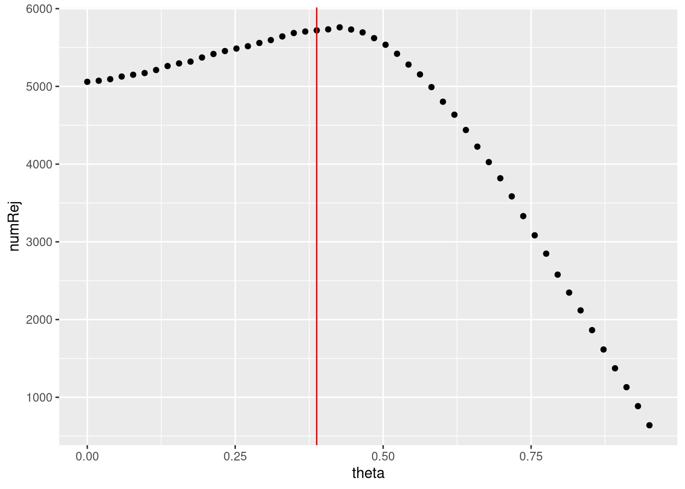
Questions
Re-run the results() function on the same dds object, but set the independent filtering parameter to FALSE. Check how many genes have no padj?
Compare the number of significant genes obtained with and without independent filtering
Imagine another way of filtering genes with very low counts
Solution
- Re-run the results() function on the same dds object, but set the independent filtering parameter to FALSE. Check how many genes have no padj?
res_no_IF <- results(dds,
name = "group_Epithelial_KD_vs_Epithelial_ctl",
independentFiltering = FALSE)
res_no_IF_tbl <- as_tibble(res_no_IF, rownames = "gene")
res_no_IF_tbl |>
filter(is.na(padj)) |> nrow()## [1] 0- Compare the number of significant genes obtained with and without independent filtering
## [1] 4759## [1] 4288- Imagine another way of filtering genes with very low counts
# filter the data to remove genes with few counts
filtering_thr <- 10
# keep genes with counts > 10 in at least 3 samples
keep <- rowSums(counts(dds, normalized = TRUE) >= filtering_thr) >=3
dds_bis <- DESeq(dds[keep, ])
dim(dds_bis)## [1] 14351 12res_bis <- results(dds_bis,
name = "group_Epithelial_KD_vs_Epithelial_ctl",
independentFiltering = FALSE)
res_bis_tbl <- as_tibble(res_bis, rownames = "gene")
# Compare with previous analysis
# (Independant filtering threshold fixed automatically by DESeq2)
res_tbl |> filter(padj < 0.05) |> nrow()## [1] 4759## [1] 48126.2.4.4 p-values distribution
Another useful diagnostic plot is the histogram of pvalues. It can give you an immediate idea of the proportion of genes differentially expressed, (the taller the is the left peak, the more p-values are close to 0 and therefore significant). Furthermore, it gives an idea of how the test behaved across all your hypotheses, and immediately diagnoses some potential problems.
res_tbl |>
filter(!is.na(padj)) |> # remove genes that were filtered out by IF
ggplot(aes(x = pvalue)) +
geom_histogram()## `stat_bin()` using `bins = 30`. Pick better value `binwidth`.
6.2.4.5 MA plot
Another interesting plot is the MA-plot (“Mean-Average” plot), a scatter plot of log2FC versus the mean of normalised counts. Genes with a padjusted value lower than 0.05 are colored. The plot highlights the fact that genes with low read counts show substantially higher variability than highly expressed genes, resulting in a strong log2FC even though are likely not really differentially expressed. In the MA-plot, we hope to observe some genes located in the upper/lower right quadrant of the plots (the most interesting candidates).
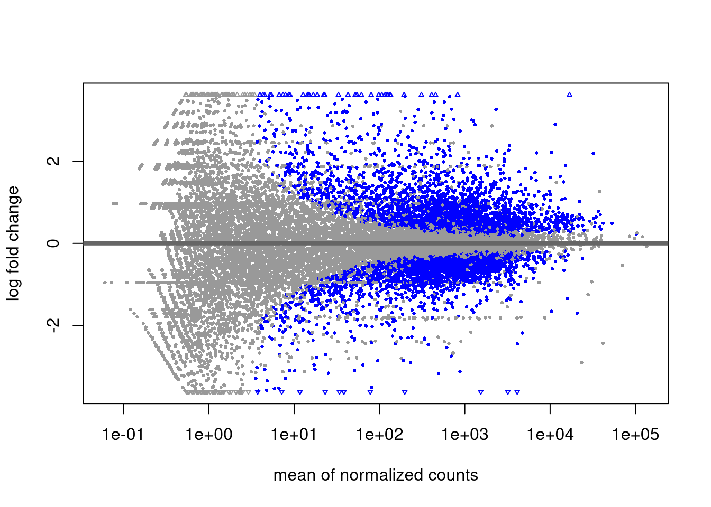
6.2.4.6 Volcano plot
Drawing a volcano-plot is highly informative to have a global view on the results. Recall that the most interesting features are those towards the top corners given that they have small pvalues and large fold-changes.
res_tbl |>
ggplot(aes(x = log2FoldChange, y = -log10(padj), color = padj < 0.05)) +
scale_colour_manual(values = c("gray40", "red")) +
geom_point(size = 0.5) +
ggrepel::geom_text_repel(data = res_tbl |> filter(-log10(padj) > 30),
aes(label = gene),
color = "black")+
geom_hline(yintercept = -log10(0.05)) +
geom_vline(xintercept = 0) +
theme(legend.position = "none")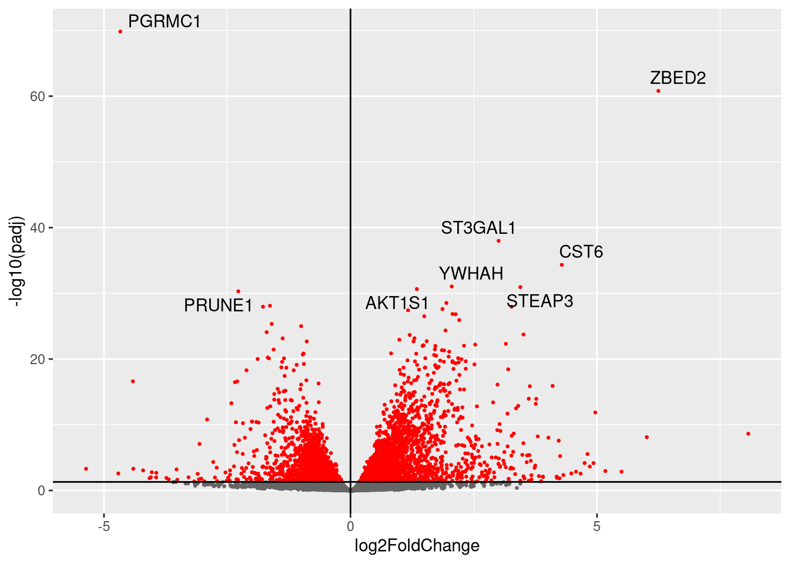
6.2.4.7 Count plots
It may be also useful to check the validity of the analysis by simply assessing the expression levels of the most highly differentially expressed genes.
best_genes <- res_tbl |>
arrange(padj) |>
pull(gene) |>
head(4)
as_tibble(counts(dds[best_genes, ], normalize = TRUE), rownames = 'gene') |>
pivot_longer(names_to = "sample", values_to = "counts", -gene) |>
left_join(as_tibble(colData(dds))) |>
ggplot(aes(x = sample, y = counts, fill = group)) +
geom_col( color = "gray30") +
facet_wrap( ~ gene, scales = "free", ncol = 2) +
theme(axis.text.x = element_text(size = 7, angle = 90, hjust = 1, vjust = .5),
axis.title.x = element_blank(),
legend.position = "right",
legend.text = element_text(size = 7),
legend.title = element_text(size = 7))## Warning in .local(object, ...): partial argument match of 'normalize' to
## 'normalized'## Joining with `by = join_by(sample)`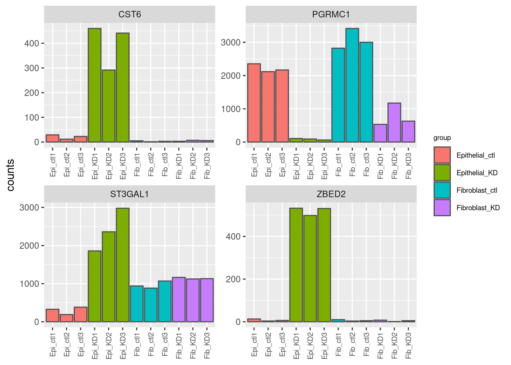
Questions
- Inspect counts of genes “CASC18” and “PRUNE1” plotted in red in the following volcano-plot. What is the most striking?
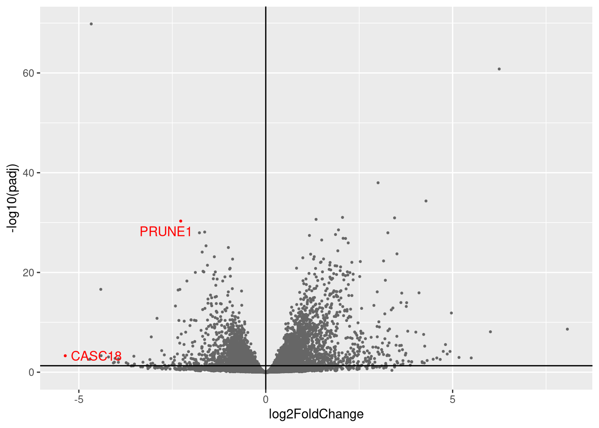
- Using the
dispersions()function, inspect the dispersion values of these genes.
Solution
QUESTION 1 :
selected_genes <- c("CASC18", "PRUNE1")
as_tibble(counts(dds[selected_genes, ], normalize = TRUE),
rownames = 'gene') |>
gather(sample, counts, -gene) |>
left_join(as_tibble(colData(dds))) |>
ggplot(aes(x = sample, y = counts, fill = group)) +
geom_bar(stat = 'identity', color = "gray30") +
facet_wrap( ~ gene, scales = "free") +
theme(axis.text.x = element_text(size = 7, angle = 90),
axis.title.x = element_blank(),
legend.position = "bottom",
legend.text = element_text(size = 7),
legend.title = element_text(size = 7))## Warning in .local(object, ...): partial argument match of 'normalize' to
## 'normalized'## Joining with `by = join_by(sample)`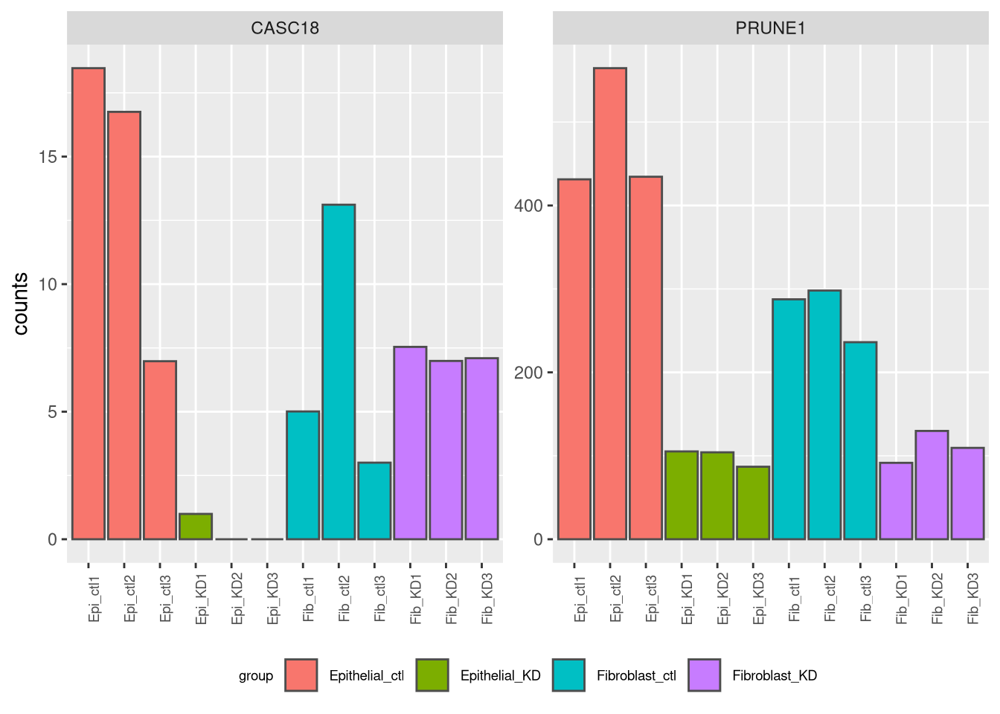
QUESTION 2:
## CASC18 PRUNE1
## 0.27106779 0.019186336.2.4.8 Logfoldchange shrinkage
The fold-changes values might sometimes be used for specific downstream analyses (these values could for example be used for gene ranking or visualization). But the Log2FC estimates provided by DESeq2 should not be used directly, as some genes might be associated to large fold-changes reflecting a high variability rather than true strong differences.
To overcome this problem, DESeq2 provides a shrinkage function called
lfcShrink(), to generate more accurate Log2foldchange estimates.
The function will shrink the fold-change values in a way that will depend
on counts and on gene dispersion values8. As seen in the following
MA-plots, the shrinkage is much stronger for lowly than for highly expressed genes.
This procedure improves interpretability of the fold-changes estimates.
res_shr <- lfcShrink(dds, coef = "group_Epithelial_KD_vs_Epithelial_ctl")
res_shr_tbl <- as_tibble(res_shr, rownames = "gene") |>
filter(!is.na(padj))
fig1 <- ggplot(res_tbl, aes(x = baseMean, y = log2FoldChange)) +
geom_point(alpha = 0.2) +
scale_x_log10() +
geom_hline(yintercept = 0) +
ggtitle("MA plot with original logFC values")
fig2 <- ggplot(res_shr_tbl, aes(x = baseMean, y = log2FoldChange)) +
geom_point(alpha = 0.2) +
scale_x_log10() +
geom_hline(yintercept = 0) +
ylab("shrunked log2FoldChange") +
ggtitle("MA plot with shrunked logFC values")
fig1 | fig2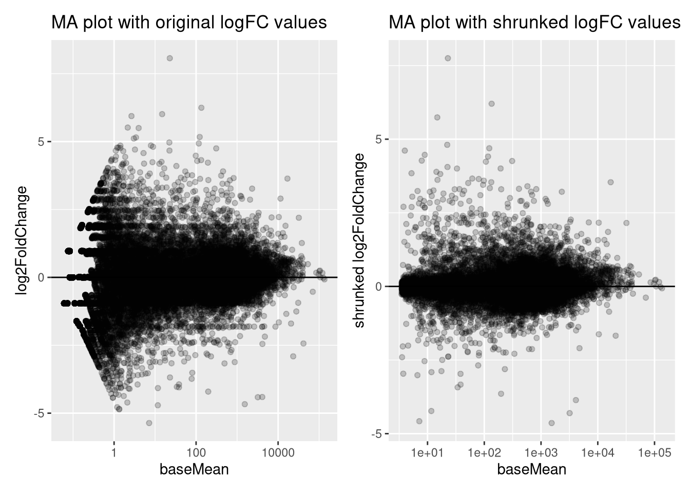
6.3 Additional exercices
6.3.1 Further links
- The edgeR package that can also be applied for RNA-Seq differential expression analysis (Chen et al. 2025).
- iSEE
is a Bioconductor package that provides an interactive Shiny-based
graphical user interface for exploring data stored in
SummarizedExperimentobjects (Rue-Albrecht et al. 2018). - Glimma is a Bioconductor package that generates interactive visualisations for analysis of RNA-sequencing data using output from limma (Ritchie et al. 2015), edgeR or DESeq2 packages in an HTML page. The interactions are built on top of the popular static representations of analysis results in order to provide additional information.
References
Note that as dispersion parameter gets lower and lower, the variance converges to the same value as the mean, and the negative binomial turns into a Poisson distribution.↩︎
genes with extremely high dispersion are those for which the adjusted dispersion is more than 2 residual standard deviations above the curve.↩︎
Using the
nameargument is however necessary to extract specific coefficients from more complex designs.↩︎The shrinkage is based on bayesian approach. See the paper describing thedefault shrinkage estimator for more details (Zhu, Ibrahim, and Love 2019).↩︎